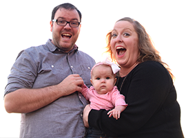

Who am I?
Personal Details

- Name: Kevin McCarty
- Phone: (682)408-9652
- Email: kwmccar@gmail.com
- Twitter / Instagram: @kwmccar
Professional Profile
Experienced digital communicator, storyteller and creative with work experience in collegiate athletics, science and higher education. Curious and hard working. Began career working in traditional athletic communications and media relations but has spent the last decade focused on the web, digital and social media. Married to Brooksie, joyfully wrangling a seven-year-old (#lifewithlydia).
My Professional Background
Work Experience
2022 October - Present
University of Kansas, Libraries
2022 - Present Assistant Director of Communications
Job Description
Help oversee external communications efforts that engage constituents and support the mission of the libraries.
2020 December - 2022 October
University of Texas at Arlington, College of Science
2020 - 2022 Associate Director of Marketing and Communications
Job Description
Helped tell the story of and promote the College of Science at the University of Texas at Arlington as a member of the Dean’s Office Staff. Unified the branding and messaging of the official COS and departmental communication channels, expanding social presence and launched a podcast series. Helped execute and navigate a transition to virtual science research symposium and week-long college expo during spring 2021 before an in-person expo in 2022 that featured more than 30 events. Built a partnership with area libraries to connect research labs with STEM education opportunities for K-12 students, including activation with summer reading programs. Assisted with the end of a transition to a new web CMS. Implemented and managed a digital signage project for internal communications. Supervisor for two full-time employees - a communications coordinator and an events coordinator - and six student interns (social, graphics, video and spanish translation).
2017 January - 2020 December
K-State Athletics
2017 - 2019 Director of Digital Media
2019 - 2020 Director of Creative Services
Job Description
Worked to provide visual impact to the department’s external communications and storytelling efforts through digital and print means as contributor to and manager of the creative services team, which included five full-time staff, three student photographers and three student graphic design interns. Coordinated the implementation of a project management tool (Basecamp) to help continue smooth operations and improve communication during remote work. Helped select a partner (Greenfly) for content distribution through internal influencers, helping to build and leverage individual brands. Prior to being promoted, managed the content and design of the official website of K-State Athletics, KStateSports.com, as well as other departmental digital properties. Oversaw the redesign of the department’s site and its (CMS) transition from SportsLabs to Sidearm Sports. Worked with new provider to launch an iOS and Android mobile app as well as the department’s first OTT apps via Roku and AppleTV. Spearheaded the development of K-State’s Virtual Visit, an interactive, virtual tour of K-State Athletics facilities. Coordinated the move to a cloud-based digital asset management system for photos (Photoshelter) for increased efficiency. Assisted with social content and graphic design for storytelling and recruiting in both roles. Traveled with football for two seasons as a member of the football communications team. Represented K-State Athletics at the Twitter Sports Summit, Sidearm Select, and was tasked with researching esports opportunities. Oversaw the athletics communications student intern program, which included nine paid student assistants and eight volunteers who worked office hours and gamedays. Contributed written content through press releases and features stories in addition to some photography.
2011 August - 2016 December
University of Kansas Athletics
2011 - 2016 Web Designer
Job Description
Web Designer
Managed the content and design of the official website of Kansas Athletics, KUAthletics.com, as well as numerous other departmental digital properties. Worked as a member of the department’s creative team to promote Jayhawk student-athletes and teams, develop engaging campaigns to drive awareness, ticket sales, and donations, and enhance the Kansas Jayhawks brand. Oversaw the redesign of KUAthletics.com and its transition from CBS College Sports to Sidearm Sports, and directed the development of WilliamsFund.com, the online home of the fundraising arm of Kansas Athletics. Coordinated the development of Jayhawks360, a virtual tour of Kansas Athletics facilities, which included a virtual reality experience targeting fans, boosters and prospective student-athletes. Helped expand the department’s streaming efforts and pushed for greater use of online video as a story telling and engagement piece. Worked with Yinzcam to develop the department’s official iOS and Android app. Continued to assist with the department’s communications efforts, filling in as primary or secondary sport media contact as needed, including football, men’s basketball, women’s basketball, baseball and golf programs. Coordinated and served as the inputter on the stat crew for the Big 12 Men’s Basketball Championship.
2010 August - 2011 July
Angelo State University Athletics
2010 - 2011 Athletic Communications Director
Job Description
Athletic Communications Director
Led the communications, marketing and community engagement efforts for the Angelo State Athletics Department. Primary focus was to enhance the coverage and exposure of ASU by putting a face on the department with a student-athlete focus in releases, videos and other promotional materials. Used engaging content on the web and social media to triple the average number of page views for AngeloSports.com and expanded the department’s video streaming operations to highlight more student-athletes. Achieved these objectives while maintaining and bringing increased integrity to the office’s traditional duties of providing statistics, game notes, features, news releases, game recaps and historical archives. Served as the primary contact for football, men’s basketball, track and field, and cross country, and managed a staff that included a full-time assistant, graduate assistant and six student interns.
2008 June - 2010 May
Illinois State University Athletics
2008 - 2010 Media Relations Graduate Assistant
Job Description
Media Relations Graduate Assistant
Served as the primary media contact for the Illinois State’s baseball team and the co-editor of the football and basketball game programs. Also served as the secondary contact for the football team during second year of assistantship. Handled media interview requests, updated the team and athletic department website, wrote feature and game stories, produced annual media guide.
2005 August - 2008 May
Kansas State University Athletics
2005 - 2008 Student Assistant
Job Description
Sports Information Student Assistant
In three years as an undergraduate student at K-State, served as the primary media contact for the men’s golf team and women’s tennis team. Handled media interview requests, updated the team and athletic department website, wrote feature and game stories, produced annual media guide. Assisted in gameday functions of the communications office, including basketball stats inputter. Worked with ABC, ESPN and Fox Sports during football and basketball broadcasts. Represented the Big 12 as media relations worker at the 2006 NCAA Dallas Regional and the 2008 Big 12 Women’s Basketball Championship.
2005 Summer - 2007 Summer
Athletes in Action - Mineral Wells Steam
2005-2006 - Media Relations Coordinator
2007 - Assistant General Manager
Job Description
Assistant General Manager
Assisted with all aspects of team management including game day operations, marketing, recruitment and hiring of staff members, and public and media relations. Hired in summer 2005 as the media relations coordinator and website manager. Wrote feature and game stories, maintained team’s website, coordinated communications with the league office. Promoted to operations director in summer 2006 while retaining media relations and web duties. Promoted to assistant general manager for summer 2007. Expanded duties included advertising and sponsorship sales, event planning and managing a small staff.
Previous Experience
Sports information student assistant at Oklahoma State University and Hutchinson Community College. Media and community relations intern for the Quad Cities River Bandits, a Class A minor league baseball team in Davenport, Iowa. Sports reporter for the Hutchinson News in Hutchinson, Kan. Has served as a baseball public address announcer and done some play-by-play and color commentary for baseball and softball broadcasts and served as sideline reporter for regionally televised swimming broadcasts.
My Education
Education
2010 Masters
Illinois State Univerity
M.S., Sport Management
School of Kinesiology and Recreation
Completed a 33-hour graduate program in sport management in the school of kinesiology and recreation at Illinois State. Used Illinois State's relationships with sport organizations, industry-focused classroom activities, faculty with real world experience and experientially diverse classmates to learn about best practices in sport management. Education included six hours in the research core, 15 hours in the sport management sequence, elective courses and a culminating experience. Worked for ISU Athletics as a graduate assistant in media relations.
2008 Bachelors
Kansas State University
B.S., Public Relations
A.Q. Miller School of Journalism and Mass Communications
Graduated from the University of Kansas with a mass communications degree - public relations sequence from the A.Q. Miller School of Journalism and Mass Communications. One of the oldest programs in the nation, the Miller School is accredited by the ASJMC and prepares students in a wide range from basic news writing to strategic communication to web design. Learned to create informational and persuasive media messages for use in multiple platforms, including print, broadcast, cable, and online/new technology outlets. Earned a minor in leadership studies.
Other Education
Spent a year each at Oklahoma State University (2003-04) and Hutchinson Community College (2004-05), where I completed general education and pre-journalism classes. Started the foundations of business certificate program at the University of Kansas.
What I’m best at
Skills & Knowledge
Knowledge
- Reporting, Writing & Editing
- Desktop Publishing
- Web Development - HTML & CSS
- Basic Photography & Videography
- Staff Recruitment & Management
- Limited Sales Experience
- Statcrew Scoring Software
- Experienced with Multiple CMS
- Adobe Creative Suite
- Active on Twitter, Facebook & Instagram
- Experience Using Google Analytics & Simple Analytics
- Elementary Understanding of Spanish
Recognitions
CoSIDA Publication Awards
2010 / Illinois State University
Best in the Nation (MBB Programs)
KAI Employee of the Month
November 2011
Kansas Athletics
Professional Organizations & Community Involvement
- College Sports Information Directors of America (CoSIDA)
- College Athletics Internet/Digital Association (CAIDA)
- 2019 SIDEARM Sports Advisory Committee
- Twitter Sports Summit Attendee
- Former Salvation Army of Douglas County Advisory Board Member
- Former member of Faith Evangelical Free Church in Manhattan, Kan.
- Attends Connect Church, formerly Lawrence Wesleyan Church, in Lawrence, Kan.
Contact
Get in touch
Thanks so much for visiting my page. I'm always delighted to talk about the web or best practices in communications, or would be glad to answer any questions you may have.
My Address
- (682) 408-9652
- kwmccar@gmail.com